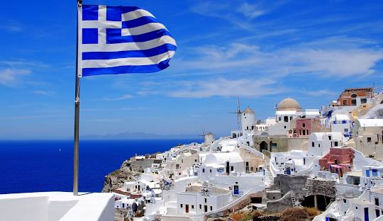
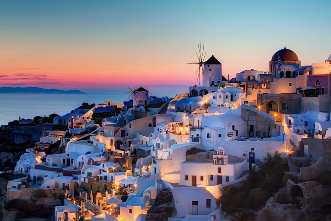

The Beauty's Of Greece
You must be wondering what's so Magical about Greece? I mean its an ordinary country , right?
Well YOUR WRONG!!!!!!!!!!!!!!!!!!!!!!!!!!!!!!!!!!!!!!!
Tourism

Greece is a beautiful country with extrodinary beauty, Its Beauty is a factor for why tourists visit Greece in the first place.Another reason why people are attracted to Greece is because of its hospitality and the welcoming people in it.
Santorini

Santorini is a very mesmerizing and insparational island.Its beauty is one of a kind and alsole'ts not forget about the delitious and traditional foods that come along with the beautiful journey of going to Greece.
.
Ierapetra
Ierapetra is one of the most popular towns in Crete for tourism.This is because the amazing history crete has and aslo the lovely beaches.A good cafe that I would recommend is Acropolis Cafe, I recommend this because the workers are so polite and also the food and drinks are extrodinary.